긴 글로 채점자를 설득
- 본인의 주장을 길게 전개
- 논리·구성·표현이 종합 평가
- 채점 기준이 상대적으로 주관적
- 준비 범위가 넓고 모호
가천대 약술전형은 내신을 반영하지 않습니다.
수능 다섯 과목을 모두 끌어올릴 자신이 없어도,
국어·수학 두 과목과 최저 한 과목이면 역전이 시작됩니다.
 Yaksul Director
Yaksul Director
‘답을 맞히는 풀이’와 ‘점수가 되는 풀이’는 다릅니다.
정율사관학원 논술 연구소의 약술논술 수업은
가천대 채점 기준을 가장 가까이에서 분석해 온 강사가
답안의 한 줄, 키워드 하나까지 직접 설계합니다.
“약술은 ‘많이 푼 사람’이 아니라 ‘정확하게 쓰는 사람’이 합격합니다.”
GR831 약술형 논술 연구소가 가천대 약술전형 자문위원 출신 연구원들과 함께 제작한 자료를, 정율사관학원 논술 연구소이 단독 시스템으로 운영합니다. 그 결과가 3년 연속 전국 최다 합격입니다.
※ GR831 × 정율사관학원 논술 연구소 자료로 합격한 학생 전체 누계 기준. 자문위원 출신 연구원이 직접 설계한 키워드 채점 기반 모의고사 42회분이 매년 갱신됩니다.
본인의 주장과 근거로 채점자를 설득하는 일반 논술과 달리, 약술논술은 채점 기준이 명확하게 정해진 ‘짧은 정답형 논술’입니다. 답안의 길이는 짧지만, 키워드 하나하나가 합격을 가릅니다.
모의고사가 흔들리고 내신은 이미 손에서 떠난 학생에게, 약술은 ‘다시 한 번’이 아니라 ‘처음부터 다른 게임’이 됩니다.
가천대 약술전형은 내신을 반영하지 않습니다. 내신 3~6등급으로 정시·교과·종합이 막힌 학생에게 유일하게 열려 있는 현실적인 대학 역전의 문입니다.
국·수·영·탐·탐 전부를 끌어올릴 시간이 없는 학생을 위한 설계. 약술 두 과목(국어·수학)에 집중하고 수능 최저 한 과목만 책임지면 됩니다.
가천대 기준 최저는 3등급 한 과목. ‘3등급’ 문턱 하나만 넘어서면 실질 경쟁률이 절반 이하로 떨어지는 게 약술의 본 모습입니다.
가천대를 메인으로 준비하면 나머지 14개 대학이 자동으로 사정권에 들어옵니다.
등급으로는 원하는 대학이 닫혔다고 느끼는 학생. 약술전형은 그 닫힌 문을 다시 여는 유일한 카드입니다.
전 과목을 균등하게 끌어올릴 자신이 없는 학생. 약술 두 과목 + 최저 한 과목 전략으로 부담을 절반 이하로.
간호·물리치료·임상병리·응급구조·치위생·방사선. 가천·을지·신한·수원을 동시에 노릴 수 있는 유일한 길.
이미 한 차례 입시를 경험했기에 전략적으로 움직일 수 있는 학생. 매년 재수생 합격생이 꾸준히 나오는 전형.
수능 후 10일이 남았다면 늦지 않았습니다. 10일 파이널만으로 합격한 사례가 매년 실재합니다.
모의고사 단과만 수강해도 매주 합격 가능성을 진단할 수 있습니다. 가장 가성비 높은 시작점.
2023년 9명 → 2024년 10명 → 2025년 7명 → 2026년 15명. 누적 41명, 한 해도 비지 않은 4년 연속 합격 라인. 간호학과는 4년 모두 합격생을 배출했습니다.
GR831이 제작한 총 42회 분량의 모의고사 컨텐츠. 매주 진행되는 실전 모의고사가 실제 가천대 시험과 국어·수학 양쪽에서 압도적인 적중률을 만들어냅니다.
시험지·OMR·해설지·모범답안지·복습워크북까지 한 패키지. 시험 → 채점 → 이틀 뒤 학생·학부모에게 성적표 발송 → 약점 진단까지 풀패키지로 운영됩니다.
‘답을 맞히는 것’보다 ‘풀이를 어떻게 쓰느냐’가 더 중요한 시험. 풀이에 반드시 들어가야 하는 키워드, 빼도 되는 부분까지 매 시험마다 구체적으로 지도합니다.
담당 PM 선생님이 순공시간을 직접 관리합니다. 의무 자습으로 학습 리듬을 만들고, 튜터링으로 개념을 체화하고, 질문방으로 시험 전날까지 모든 질문에 라이브로 응대합니다.
“수능 끝났다”가 끝이 아닙니다. 정율사관학원 논술 연구소은 재수생·N수생을 위한 10일 파이널 전략으로 매년 합격생을 만들고 있습니다.
매년 두 자릿수에 가까운 합격생이 안정적으로 만들어집니다. 일회성 실적이 아닙니다.
2026학년도 가천대 약술전형 합격생 14인의 합격통지서. 개인정보 보호를 위해 가운데 글자를 가렸습니다.
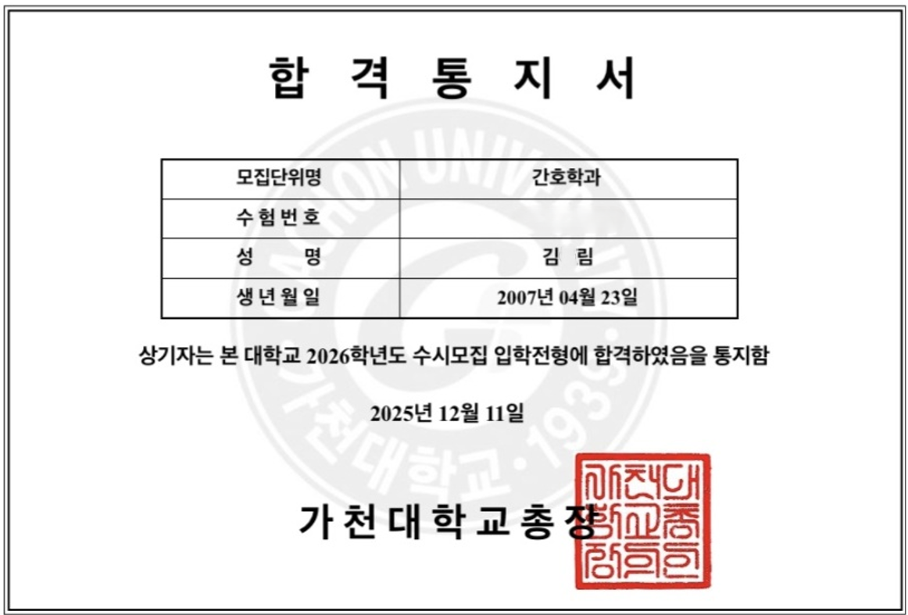
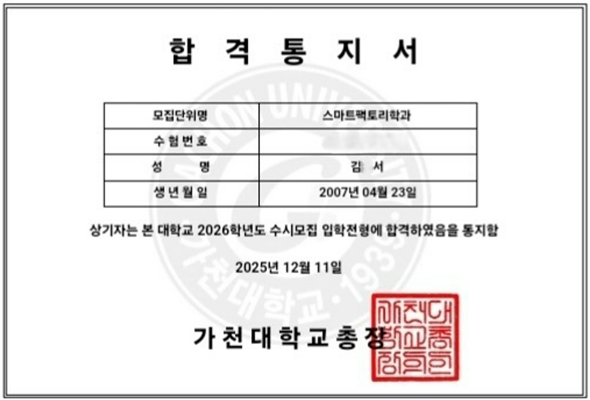
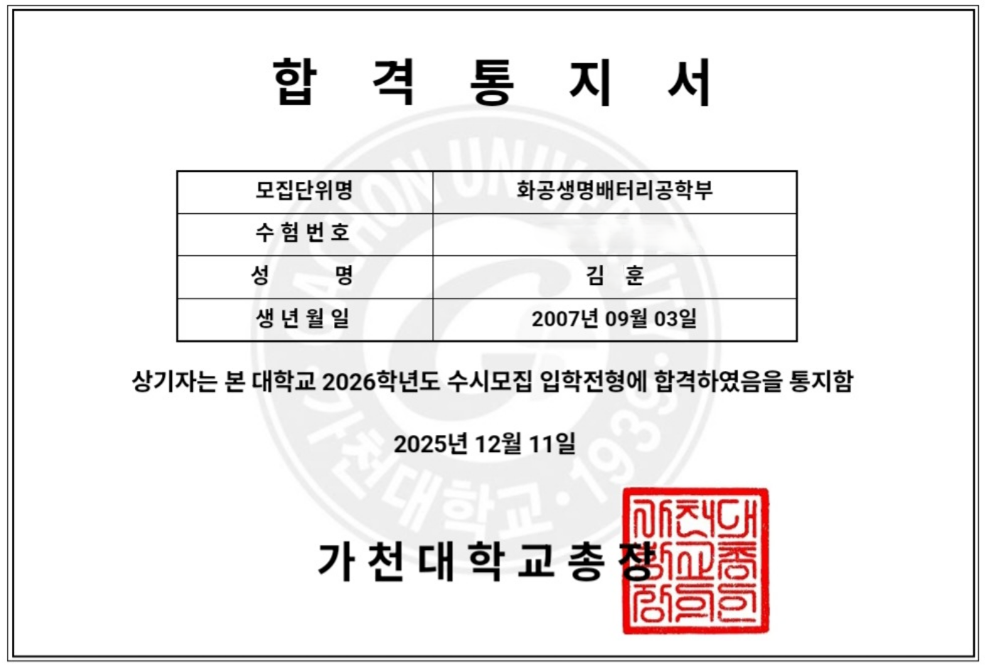
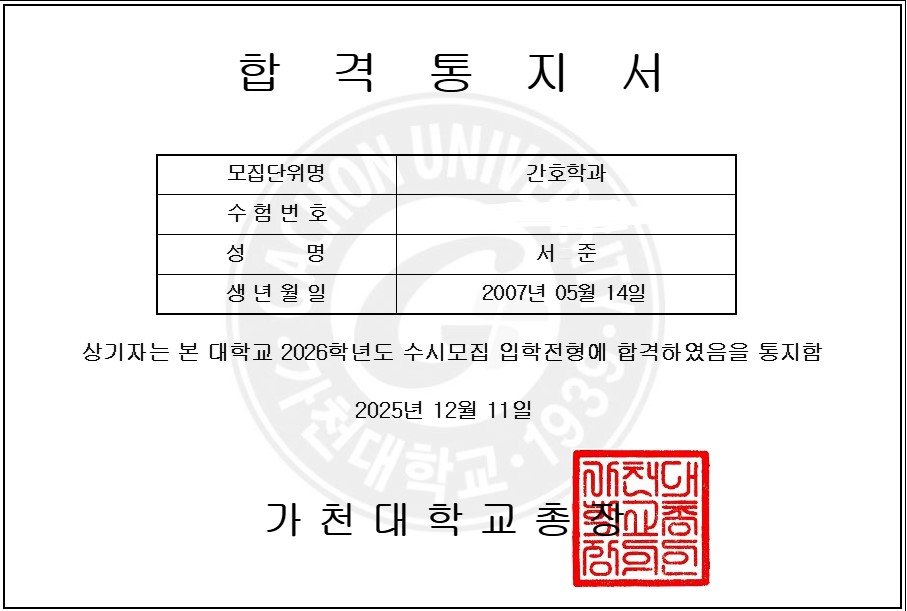
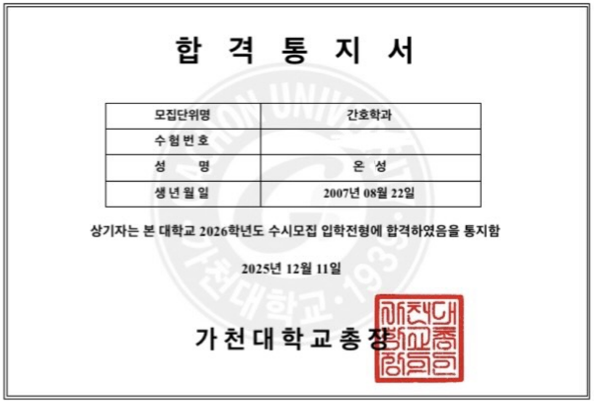
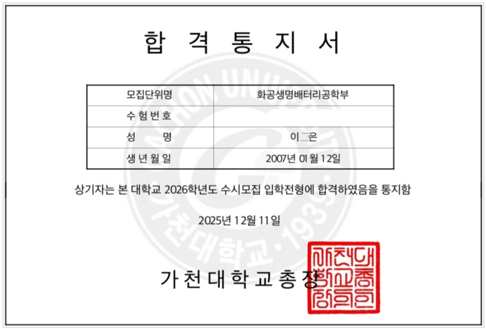
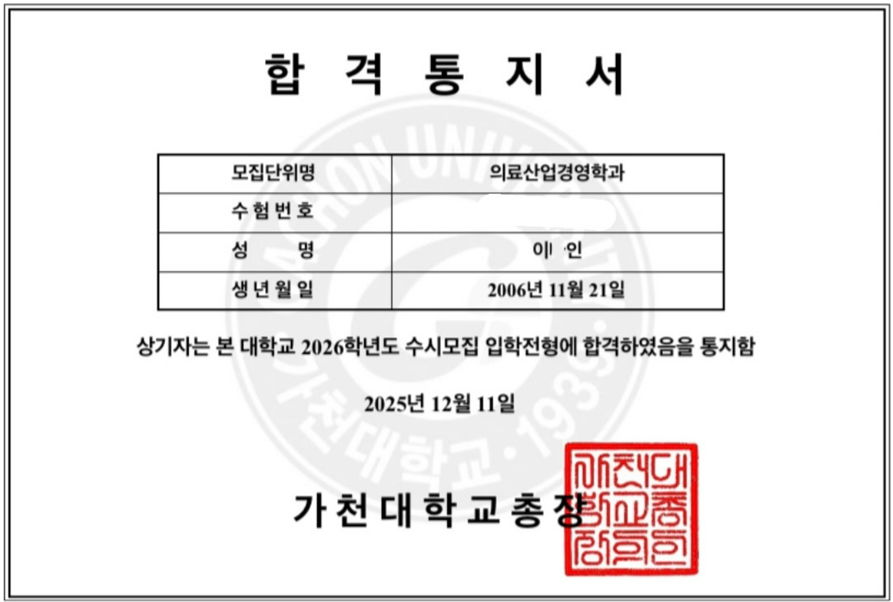
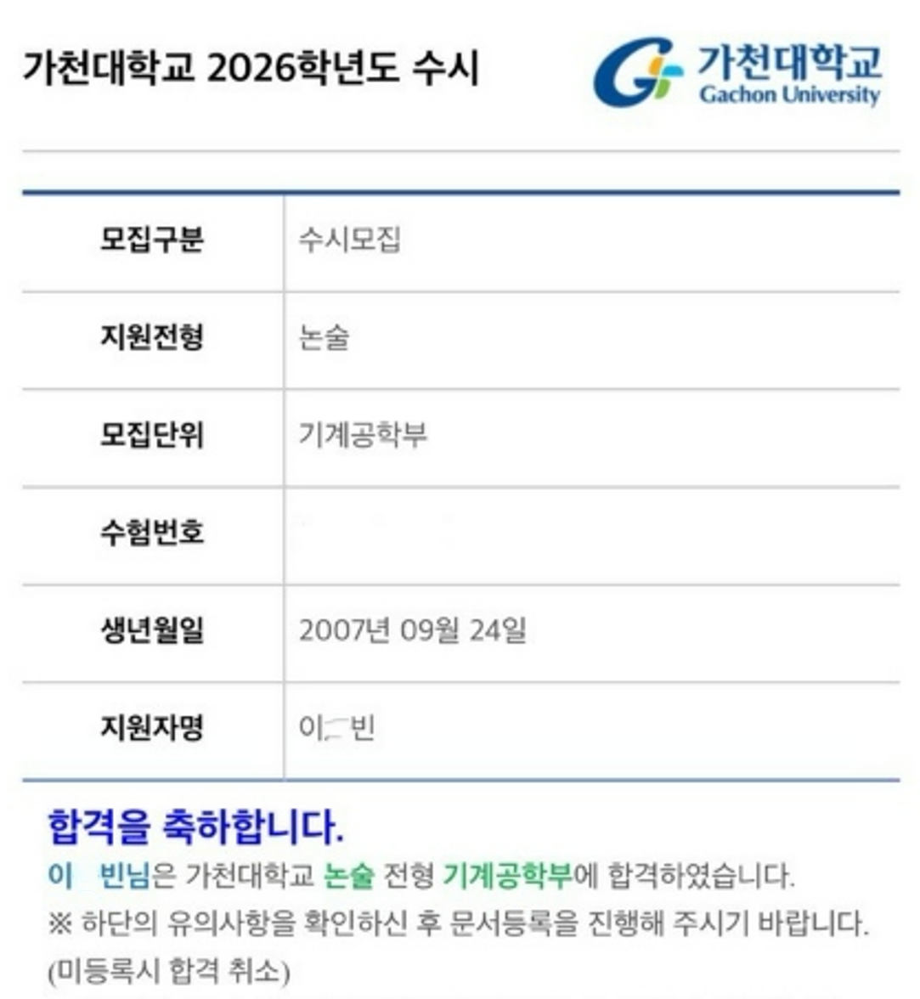
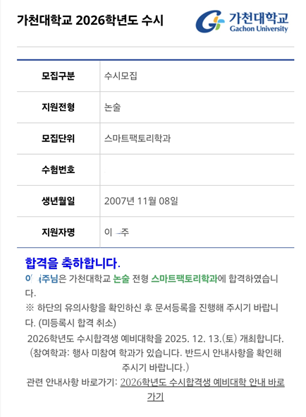
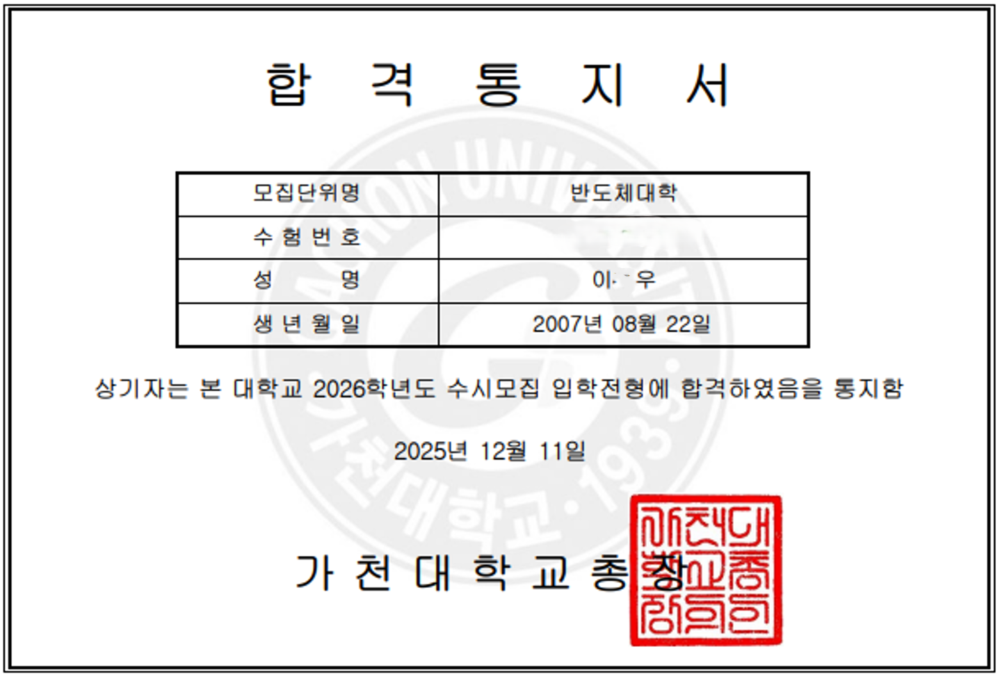
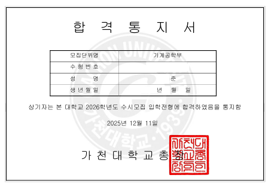
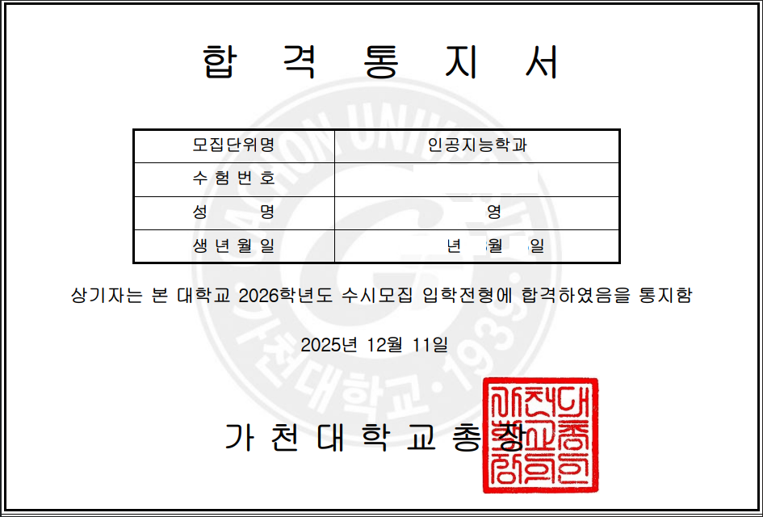
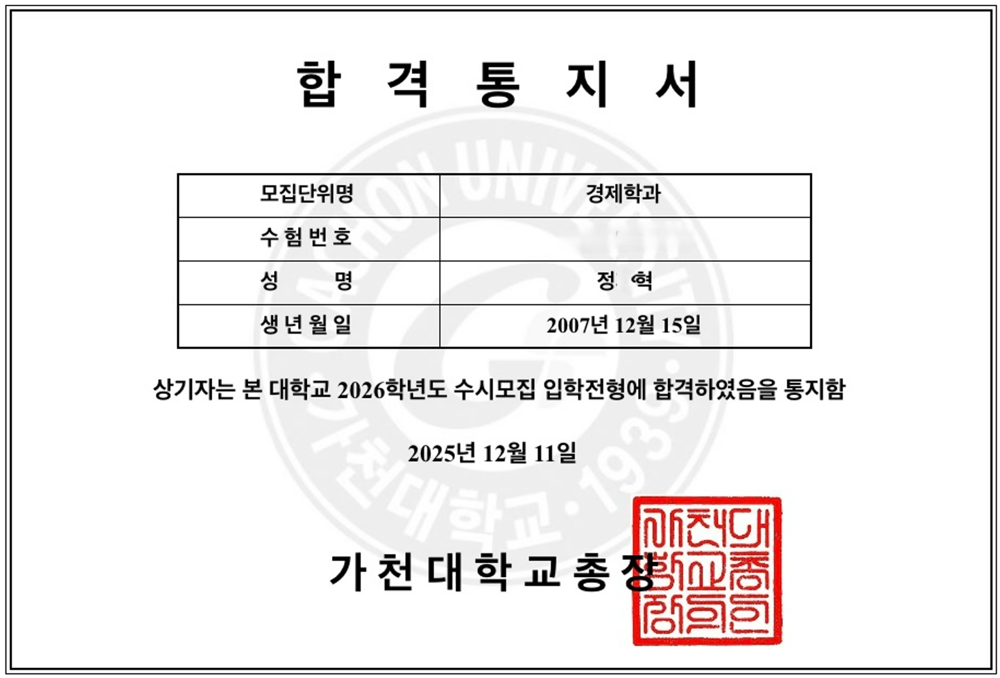
※ 합격통지서 이미지의 개인정보(성명 가운데 글자·수험번호 등)는 가공 처리되었습니다.
2026학년도 가천대 합격생 8인의 실제 후기 — 핵심 메시지만 추려 정리했습니다.
“수능이 끝났을 때 가천대 논술까지 10일밖에 남지 않았다. 다른 학원을 다녀봤지만 확신이 들지 않아 마지막이라는 마음으로 정율을 찾아갔다. 학원에서 짚어준 독서·문학 지문이 시험에 그대로 나왔다. 학원 모의고사 수학이 체감상 더 어려웠기 때문에 시험장에서는 오히려 ‘덜 떨고’ 모든 문제를 풀고 답안까지 완성할 수 있었다. 10일 만에 가천대 합격이 가능하다는 걸 직접 증명했다.”
“처음에는 수학은 답만 맞히면 되는 줄 알았다. 그런데 수업을 들으며 답보다 풀이를 어떻게 쓰느냐가 더 중요하다는 걸 알았다. 어떤 조건은 풀이에 반드시 등장시켜야 하고, 어떤 과정은 생략해도 된다. 이걸 알고 나니 ‘답이 맞았는지’보다 ‘내 풀이가 논리적으로 전달되는지’를 먼저 생각하게 됐다. 그 연습이 합격의 가장 큰 이유였다.”
“내신도 수능도 어중간했다. 마지막 희망으로 약술에 도전했고 그렇게 정율사관학원 논술 연구소에 왔다. 국어는 어디가 출제될지 정확히 짚어주셨고, 가장 약했던 수학은 개념부터 원리까지 다시 잡혔다. 주말 모의고사와 수능 후 파이널에서 풀었던 유형이 실제 시험에 거의 그대로 나와 긴장 없이 풀어낼 수 있었다. 정율의 약술 수업은 나에게 튼튼한 동아줄이었다.”
“재수생으로서, 약술을 ‘전략’으로 보면 충분히 가천대도 도전해볼 수 있다고 생각했다. 정율에서 가장 도움이 됐던 건 튜터링이었다. 친구들끼리 모르는 문제를 설명하면서 개념이 훨씬 명확해졌고, 선생님·조교의 꼼꼼한 피드백으로 약점이 한 번에 잡혔다. 단순히 공부만이 아니라 끝까지 버틸 수 있도록 정신적으로 잡아준 곳이다. 서경대·을지대·가천대 동시 합격.”
“약술 모의고사가 실제 시험지와 정말 100% 같은 형식이라 시험장에서 흔들릴 일이 없었다. 시험 직후 학생과 학부모에게 발송되는 성적표로 내가 어디서 점수를 놓치는지가 매주 명확해졌고, 모범답안지를 통해 ‘불필요한 서술’을 줄이는 법을 익혔다. 이 한 가지가 시험 시간을 크게 단축시켜 줬다.”
“파이널부터 시작했기에 불안했지만, 자료의 퀄리티와 양 모두 충분했다. 매일 2개의 시험을 실전처럼 푸는 구성 덕에 시간 운영이 잡혔고, 해설지가 ‘학교가 요구하는 답’을 명확히 담고 있어 그대로 피드백이 됐다. 시험에서 국어는 풀었던 지문이 모두 나와 시간을 아꼈고, 수학은 부분점수까지 빠짐없이 챙겨 합격할 수 있었다.”
“수능 성적표를 받은 순간, 내 입시는 끝났다고 생각했다. 그러나 정율의 파이널에서 매일 실전 모의를 풀며 문제 풀이 속도, 답안 정리법, 시간 배분까지 구체적으로 지도받았다. 단순히 푸는 법이 아니라 ‘채점 기준에 맞게 쓰는 법’까지 알려주셔서 단기간에 약술의 감각을 익혔고, 가천대 경제학과 합격이라는 결과를 얻었다.”
“처음엔 약술이 ‘수능을 못 봤을 때의 보험’ 정도라고 생각했다. 하지만 준비하면서 가장 방향성이 분명한 전형이라는 걸 알게 됐다. 정율은 단순히 문제를 많이 풀게 하지 않는다. 출제 의도와 채점 기준을 명확히 설명하고, 문항이 요구하는 키워드를 정확히 짚는 훈련을 매일 반복시켰다. 그 덕분에 시험 당일 차분하게 답을 적어낼 수 있었다.”
4월의 기초 다지기부터 수능 후 10일 파이널까지, 매 시기마다 무엇을 해야 하는지 정해져 있습니다.
적중 예상 문제 풀이 · 출제 키워드 분석 · 모범답안 기반 풀이 정제. 썸머 특강 7/20(월)~8/16
적중 예상 변형 문제 · 학교별 파이널 · 과목별 특강 · 시간 운영 훈련.
하루 2회 실전 모의 · 현장 해설 + 온라인 영상 복습. 매년 ‘파이널만으로’ 합격한 학생이 실제로 존재합니다.
집이 멀거나 종합반이 부담스러운 학생용
수학 집중 보강이 필요한 학생용
두 과목 모두 단과로 듣고 싶은 학생
가천대 약술전형은 내신을 반영하지 않습니다. 내신 3~6등급의 학생이 가장 현실적으로 노려볼 수 있는 ‘역전전형’입니다.
아닙니다. 가천대 기준 수능 최저는 한 과목 3등급 충족이면 됩니다. 5과목을 모두 끌어올릴 자신이 없는 학생에게 가장 적합한 전형이고, 3등급만 맞춰도 실질 경쟁률이 절반 이하로 떨어집니다.
약술논술은 본인의 주장을 길게 쓰는 시험이 아니라, 정해진 키워드(국어는 단어 찾아쓰기, 수학은 풀이 키워드)를 정확히 짚어 쓰는 시험입니다. 답안 길이는 짧고 채점 기준은 명확합니다.
늦지 않습니다. 여름방학은 약술논술을 본격적으로 시작하기 가장 좋은 시기입니다. 정율사관학원 논술 연구소은 여름방학 합류 학생을 매년 가천대 합격까지 끌어올린 사례를 갖고 있고, 수능 직후 10일 파이널만으로 합격한 사례도 다수입니다(이●우 가천대 반도체대학, 김●림 가천대 간호학과). 7/20(월)부터 시작되는 썸머 특강으로 합류하실 수 있습니다.
매년 재수생·N수생 합격생이 배출됩니다. 2024 박●경·송●안(가천대 간호), 2026 이●인(가천대 의료산업경영) 등 사례가 누적되어 있습니다.
주말 단과(국어/수학/국어+수학) 또는 약술 모의고사 단과(온라인 수강 가능)를 선택하실 수 있습니다.
가능합니다. 약술 모의고사 단과(회당 5만원)는 온라인으로도 참여 가능합니다. 수학이 안정적인 3등급인 학생이 매주 합격 가능성을 진단하기에 가장 가성비 높은 선택입니다.
네. 약술논술을 시행하는 대학은 총 15곳, 정원 약 4,200명입니다. 가천대를 메인으로 준비하면 나머지 14개 대학도 자동으로 사정권에 들어오며, 정율사관학원 논술 연구소은 4년간 13개 대학에 합격생을 배출했습니다.
약술전형의 구조 · 합격 전략 · GR831 × 정율의 시스템을 한 자리에서.
학생·학부모님 모두 참석을 권장합니다.
대상: 약술논술에 관심 있는 모든 학생·학부모 · 신청: 학원 문의